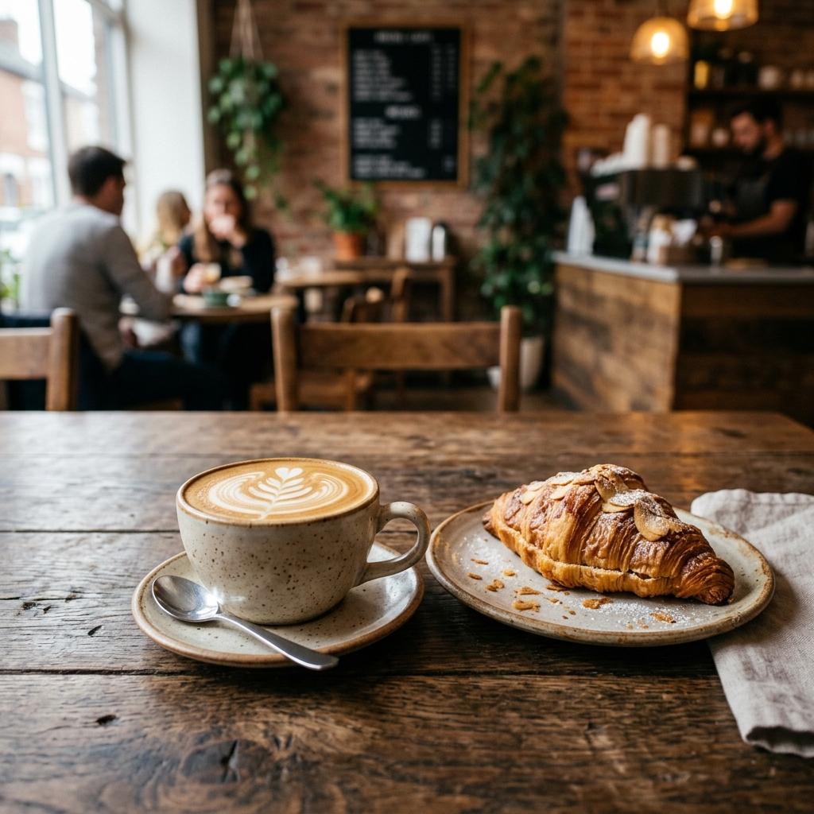
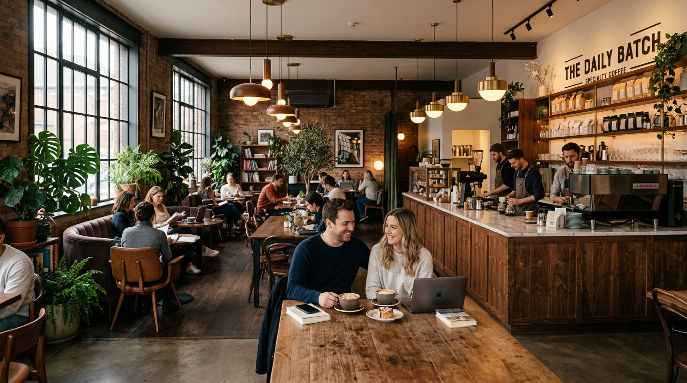
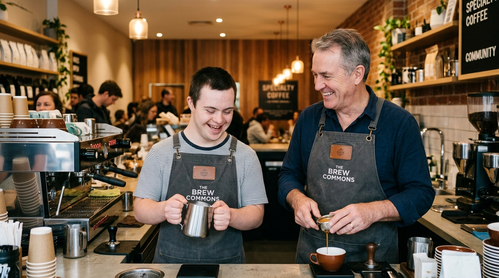

Bienvenidos a Coffeechat
Una cafetería donde el amor, la inclusión y el buen café se sirven todos los días.
Ver Nuestro Menú

Nuestra Misión
En Coffeechat, creemos que todos merecemos una oportunidad para brillar. Somos una cafetería inclusiva impulsada por el talento y el gran corazón de personas con Síndrome de Down y adultos mayores.
Cada taza de café que servimos está hecha con dedicación, celebrando la diversidad y demostrando que la verdadera calidad nace del trabajo en equipo sin etiquetas.